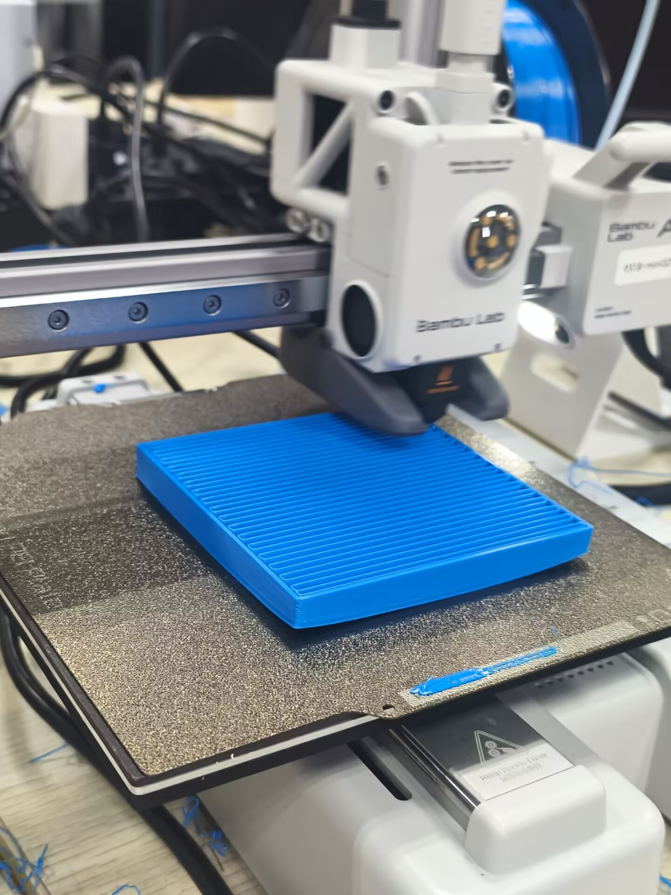
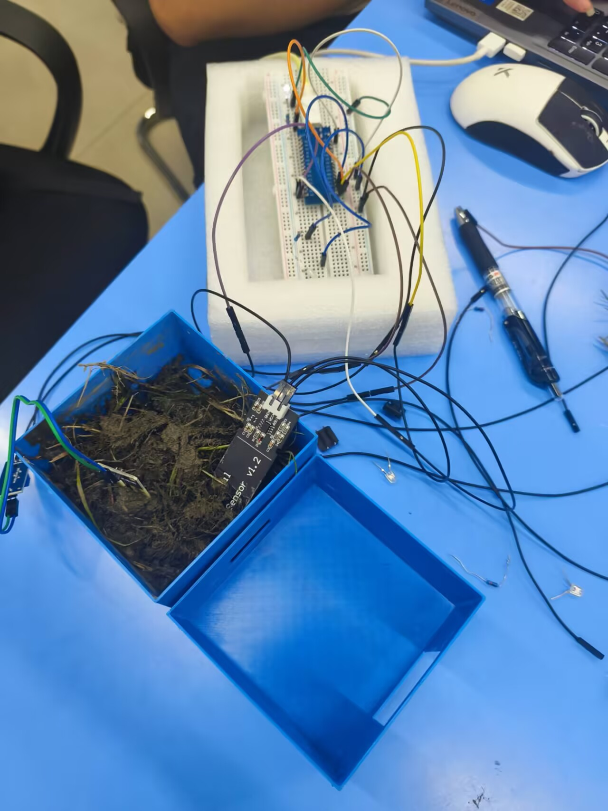
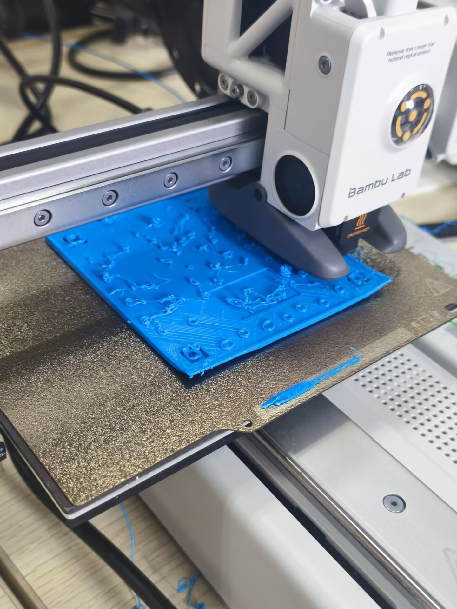

创客实践课程日志
记录学习历程，展示实践成果 | 张洪平 | 2026年春季学期
记录学习历程，展示实践成果 | 张洪平 | 2026年春季学期
创客（Maker）是指一群酷爱科技、热衷实践、乐于分享，努力把各种创意转变为现实的人。创客运动的核心理念是"动手创造、分享协作"。
创客运动（Maker Movement）起源于2005年左右，随着Arduino、3D打印等开源硬件的普及而迅速发展。2012年美国《连线》杂志主编Chris Anderson出版《创客：新工业革命》，标志着创客文化正式进入主流视野。如今，全球各地的创客空间（Makerspace/Fab Lab）已超过2000个，为创客提供了交流、学习和协作的平台。
| 维度 | 传统制造 | 创客模式 |
|---|---|---|
| 规模 | 大规模批量生产 | 小批量、个性化定制 |
| 门槛 | 需要大量资金和设备 | 低成本工具即可开始 |
| 知识 | 专业化分工 | 跨学科综合能力 |
| 协作 | 企业内部团队 | 全球开源社区 |
Git是一个分布式版本控制系统，由Linux之父Linus Torvalds于2005年开发，用于跟踪代码变更、协作开发。在创客项目中，Git帮助我们管理代码版本、记录开发历程、实现团队协作。
| 概念 | 说明 |
|---|---|
| 工作区（Working Directory） | 项目文件所在的目录，直接编辑的文件 |
| 暂存区（Staging Area） | 准备提交的文件快照，通过git add添加 |
| 本地仓库（Local Repository） | 通过git commit提交的版本历史 |
| 远程仓库（Remote Repository） | 托管在Gitee/GitHub上的代码仓库 |
# ==================== 仓库初始化 ==================== git init # 在当前目录初始化Git仓库 git clone <仓库地址> # 克隆远程仓库到本地 # ==================== 日常操作 ==================== git status # 查看工作区状态 git add . # 添加所有修改到暂存区 git add <文件名> # 添加指定文件到暂存区 git commit -m "提交说明" # 提交暂存区内容到本地仓库 git commit -am "说明" # 跳过add，直接提交已跟踪文件 # ==================== 远程操作 ==================== git remote add origin <仓库地址> # 关联远程仓库 git push origin main # 推送本地提交到远程 git pull origin main # 拉取远程更新到本地 # ==================== 分支操作 ==================== git branch # 查看本地分支 git branch <分支名> # 创建新分支 git checkout <分支名> # 切换到指定分支 git checkout -b <分支名> # 创建并切换到新分支 git merge <分支名> # 合并指定分支到当前分支 # ==================== 查看历史 ==================== git log --oneline # 简洁版提交历史 git log --graph --oneline # 图形化分支历史 git diff # 查看未暂存的修改
项目中有些文件不需要纳入版本控制（如编译产物、临时文件、敏感信息等），可以通过.gitignore文件排除：
# .gitignore 示例 # 编译产物 *.o *.exe build/ # IDE配置文件 .vscode/ .idea/ # 系统文件 .DS_Store Thumbs.db # 敏感信息 *.env config.local.js
在本课程中，我使用Git来管理HTML日志的开发过程。每次更新日志内容后，通过git add → git commit → git push的流程提交到Gitee仓库，确保日志的版本可追溯。
# 典型的提交流程 git add html/index.html # 添加修改的文件 git commit -m "feat: 添加嵌入式计算板块内容" # 语义化提交信息 git push origin main # 推送到Gitee
3D设计与打印是创客实践的重要环节，通过数字化建模将创意转化为实物。本课程学习了Fusion 360建模软件和FDM 3D打印技术。3D打印技术（又称增材制造）通过逐层堆积材料的方式来构建三维实体，与传统的减材制造（如切削加工）相比，具有成型灵活、材料浪费少、适合小批量定制等优势。
| 技术 | 原理 | 材料 | 精度 | 适用场景 |
|---|---|---|---|---|
| FDM | 热熔丝堆积 | PLA/ABS/PETG | ±0.2mm | 结构件、外壳、原型 |
| SLA | 光固化树脂 | 光敏树脂 | ±0.05mm | 精细模型、珠宝、牙科 |
| SLS | 激光烧结粉末 | 尼龙/金属粉末 | ±0.1mm | 功能性零件、工业件 |
| 技能点 | 学习内容 | 应用场景 |
|---|---|---|
| Fusion 360 | 草图绘制、拉伸/旋转/布尔运算、参数化建模、装配体设计 | 花盆外壳设计 |
| 切片软件 | Bambu Studio使用、支撑设置、打印参数调整、G-code预览 | 3D打印前处理 |
| 打印工艺 | FDM原理、材料选择、后处理技巧、常见故障排除 | 实物制作 |
在XY平面上绘制2D轮廓，使用线段、圆弧、矩形等工具，添加尺寸约束和几何约束
通过拉伸（Extrude）、旋转（Revolve）、扫掠（Sweep）、放样（Loft）等操作将草图转换为3D实体
使用合并（Union）、减去（Subtract）、相交（Intersect）组合多个实体，实现复杂结构
添加圆角（Fillet）、倒角（Chamfer）、抽壳（Shell）等特征，完善模型细节
将模型导出为STL格式文件，用于切片软件处理
| 参数 | 说明 | 推荐值 |
|---|---|---|
| 层高（Layer Height） | 每层的厚度，影响精度和打印速度 | 0.2mm（标准）/ 0.1mm（精细） |
| 壁厚（Wall Thickness） | 外壳的厚度，影响强度 | 0.8-1.6mm（2-4圈） |
| 填充率（Infill） | 内部填充密度，影响强度和重量 | 15-20%（一般）/ 50%+（高强度） |
| 打印温度 | 喷嘴和热床温度，影响层间粘合 | PLA: 200°C/60°C, ABS: 240°C/100°C |
| 打印速度 | 喷嘴移动速度，影响质量和时间 | 40-60mm/s（质量优先） |
| 支撑类型 | 悬垂结构的支撑方式 | 树状支撑（易去除）/ 普通支撑（稳定） |
电子焊接是电子制作的基础技能，通过加热使焊锡熔化，将电子元件连接成完整的电路。焊接质量直接影响电路的可靠性和使用寿命，是每个创客必须掌握的基本功。
| 工具 | 用途 | 注意事项 |
|---|---|---|
| 电烙铁 | 加热焊锡，提供焊接热源 | 温度控制在300-380°C，不用时放置在烙铁架上 |
| 焊锡丝 | 含锡合金，熔化后形成焊点 | 常用Sn63/Pb37（有铅）或SAC305（无铅） |
| 助焊剂（松香） | 去除氧化层，帮助焊锡流动 | 焊接后需清洗残留，防止腐蚀 |
| 吸锡器/吸锡带 | 去除多余焊锡，修正焊点 | 焊点加热后快速使用 |
| 剪线钳 | 剪切元件引脚和导线 | 剪切时注意保护眼睛 |
| 万用表 | 检测通断、电压、电阻 | 焊接前后都要检测电路 |
清洁烙铁头（用湿海绵擦拭），给烙铁头上锡（镀锡），确保元件引脚和焊盘清洁
将烙铁头同时接触焊盘和元件引脚，加热约1-2秒，使两者温度均匀上升
从另一侧将焊锡丝靠近焊盘，焊锡会自动熔化并流动，形成焊点后移开锡丝
焊锡充分流动后，沿引脚方向移开烙铁，等待焊点冷却凝固（约2-3秒）
| 焊点类型 | 外观特征 | 原因分析 | 解决方法 |
|---|---|---|---|
| ✅ 良好焊点 | 表面光亮、圆锥形、与焊盘充分润湿 | 温度合适、操作正确 | 无需处理 |
| ❌ 虚焊 | 表面暗淡、呈球状、与焊盘不润湿 | 温度不够或加热时间不足 | 重新加热焊接 |
| ❌ 冷焊 | 表面粗糙、有裂纹 | 焊点凝固时受到移动 | 重新加热，冷却时保持静止 |
| ❌ 过焊 | 焊锡过多、呈 blob 状 | 送锡过多或加热过久 | 用吸锡器去除多余焊锡 |
| ❌ 桥接 | 两个焊点之间有焊锡连接 | 送锡过多或焊盘间距太近 | 用吸锡带去除多余焊锡 |
通过实际焊接练习，掌握了以下技能：
嵌入式计算是创客项目的核心技术之一，通过微控制器（MCU）实现硬件的智能控制。与通用计算机不同，嵌入式系统是为特定任务设计的专用计算系统，具有体积小、功耗低、实时性强等特点。本课程主要学习了ESP32开发板的使用。
| 开发板 | 处理器 | 特点 | 适用场景 |
|---|---|---|---|
| Arduino Uno | ATmega328P, 16MHz | 入门简单，社区资源丰富 | 基础电子项目、学习入门 |
| ESP32 | 双核Xtensa LX6, 240MHz | 内置WiFi/蓝牙，性能强 | IoT项目、无线通信 |
| Raspberry Pi | ARM Cortex-A72 | 运行Linux系统，接口丰富 | 复杂计算、图像处理 |
| STM32 | ARM Cortex-M系列 | 工业级可靠性，低功耗 | 工业控制、专业嵌入式 |
| 特性 | 参数 | 说明 |
|---|---|---|
| 处理器 | 双核Xtensa LX6，主频240MHz | 可运行FreeRTOS实时操作系统 |
| 内存 | 520KB SRAM + 4MB Flash | 足够运行复杂程序和存储数据 |
| 无线通信 | WiFi 802.11 b/g/n，蓝牙4.2/BLE | 支持物联网和无线控制 |
| GPIO | 34个可编程引脚 | 支持数字输入/输出、中断 |
| ADC | 12位SAR ADC，18个通道 | 读取模拟传感器信号（0-4095） |
| DAC | 2个8位DAC通道 | 输出模拟电压信号 |
| PWM | 16个PWM通道 | LED调光、电机调速 |
| 通信接口 | SPI、I2C、UART | 连接各种传感器和外设 |
GPIO（General Purpose Input/Output）是微控制器与外部世界交互的基础。通过编程控制引脚的电平高低，实现对外设的控制和数据读取。
// GPIO基础操作示例 // 数字输出 - 控制LED pinMode(2, OUTPUT); // 设置引脚为输出模式 digitalWrite(2, HIGH); // 输出高电平（3.3V） digitalWrite(2, LOW); // 输出低电平（0V） // 数字输入 - 读取按键 pinMode(4, INPUT_PULLUP); // 设置引脚为输入，启用内部上拉电阻 int val = digitalRead(4); // 读取引脚电平：HIGH或LOW // 模拟输入 - 读取传感器 int sensorVal = analogRead(34); // 读取ADC值：0-4095 float voltage = sensorVal * 3.3 / 4095; // 转换为电压值 // PWM输出 - LED调光 ledcAttach(2, 5000, 8); // 通道0，频率5kHz，8位分辨率 ledcWrite(2, 128); // 占空比50%（128/255）
| 传感器 | 类型 | 输出 | 应用 |
|---|---|---|---|
| 土壤湿度传感器 | 模拟 | 0-4095（湿度越低值越大） | 智能花盆、农业监测 |
| 光敏电阻 | 模拟 | 0-4095（光照越强值越大） | 光控灯、环境监测 |
| DHT11/DHT22 | 数字 | 温湿度数据 | 气象站、环境监测 |
| 超声波HC-SR04 | 数字 | 距离（2cm-400cm） | 避障、测距 |
| 雨滴传感器 | 模拟/数字 | 有无雨滴检测 | 漏水检测、雨量监测 |
Arduino IDE是创客最常用的嵌入式开发环境，语法基于C/C++，提供了丰富的库函数和示例代码。
// ESP32基础示例：LED闪烁 #define LED_PIN 2 void setup() { // 初始化函数，上电后运行一次 Serial.begin(115200); // 初始化串口，波特率115200 pinMode(LED_PIN, OUTPUT); // 设置LED引脚为输出 } void loop() { // 主循环函数，反复执行 digitalWrite(LED_PIN, HIGH); // 点亮LED Serial.println("LED ON"); // 串口打印 delay(1000); // 延时1秒 digitalWrite(LED_PIN, LOW); // 熄灭LED Serial.println("LED OFF"); delay(1000); }
中期项目是课程的重要实践环节，通过团队协作完成一个完整的创客项目。我们小组选择了"桌面光敏小灯"项目。
| 成员 | 分工 | 主要贡献 |
|---|---|---|
| 范博洋 | 软件开发 | 负责嵌入式代码编写，完成光敏传感器数据读取和LED控制逻辑 |
| 吕璇 | 硬件搭建 | 负责电路设计与接线，完成传感器和LED的硬件连接 |
| 张洪平（本人） | 结构设计 | 负责灯罩3D建模与打印，协助硬件组装调试 |
确定项目需求，完成元器件选型，设计电路原理图
使用Fusion 360建模灯罩结构，完成3D打印
焊接电路，连接传感器和LED，完成硬件搭建
编写控制代码，调试传感器阈值，优化LED亮度曲线
软硬件联合调试，功能验证，问题修复
PCB（Printed Circuit Board，印刷电路板）设计是电子制作的进阶技能。与面包板和洞洞板相比，PCB具有可靠性高、体积小、适合批量生产等优势。通过专业EDA软件设计电路板，可以实现电路的规范化和小型化，是产品从原型走向量产的必经之路。
| 概念 | 说明 |
|---|---|
| 层数 | 单层板（低成本）、双层板（最常用）、四层板（高密度） |
| 铜箔厚度 | 1oz（35μm）为标准，2oz用于大电流场景 |
| 线宽/线距 | 最小线宽/线距决定制造精度，一般6/6mil以上 |
| 过孔（Via） | 连接不同层的金属化孔，分为通孔、盲孔、埋孔 |
| 焊盘（Pad） | 元件引脚的焊接区域，分为直插焊盘和表贴焊盘 |
| 丝印层 | 印刷在PCB表面的文字和图案，用于标识元件 |
使用EDA软件绘制电路原理图，放置元件符号，连接电气网络。原理图是电路的逻辑表达，与实际物理布局无关
为原理图中的每个元件指定PCB封装（Footprint），封装定义了元件的物理尺寸和引脚位置
将原理图转换为PCB布局，合理安排元件位置。布局原则：信号流向清晰、发热元件分散、接口元件靠边
连接各元件的电气走线。布线原则：走线尽量短、避免直角转弯、电源线加宽、信号线远离干扰源
运行设计规则检查（Design Rule Check），确保没有间距违规、未连接网络等错误
导出Gerber生产文件（包含各层的铜箔、阻焊、丝印等信息），送PCB工厂打样
| 工具 | 特点 | 适用人群 |
|---|---|---|
| 嘉立创EDA | 国产免费，云端在线使用，内置元件库，一键下单嘉立创打样 | 初学者、快速原型 |
| KiCad | 开源免费，功能强大，社区活跃，支持3D预览 | 进阶用户、开源项目 |
| Altium Designer | 专业级工具，功能全面，支持高级仿真和信号完整性分析 | 专业工程师、企业开发 |
| EasyEDA | 嘉立创EDA国际版，支持多语言，全球用户使用 | 国际协作项目 |
设计思维（Design Thinking）是由斯坦福大学d.school提出的一种以人为本的创新方法论，强调从用户需求出发，通过跨学科协作和迭代测试不断优化解决方案。它不仅适用于产品设计，也广泛应用于服务设计、商业模式创新等领域。
通过用户访谈、观察、问卷调查等方法，深入了解用户的需求、痛点和期望。共情是设计思维的基础，只有真正理解用户，才能设计出有价值的产品。
常用方法：用户访谈、实地观察、问卷调查、用户画像（Persona）、用户旅程图（Journey Map）
将共情阶段收集到的信息进行整理和分析，提炼出核心问题。好的问题定义应该具体、可操作，既不宽泛也不狭窄。
常用工具：问题陈述（How Might We）、HMW问题、设计简报（Design Brief）、需求优先级矩阵
围绕核心问题，通过头脑风暴、思维导图等方法产生尽可能多的解决方案。此阶段强调数量而非质量，鼓励天马行空的想法。
常用方法：头脑风暴（Brainstorming）、思维导图（Mind Map）、SCAMPER法、六顶思考帽、逆向思维
将创意转化为可触摸的原型，用最低成本快速验证设计思路。原型不必完美，关键是要能测试核心功能和用户体验。
原型类型：纸质原型、3D打印模型、功能样机、交互原型（Figma/Axure）、视频演示
让真实用户使用原型，收集反馈和建议。测试不是验证"设计是否正确"，而是发现"设计还有什么不足"。
测试方法：可用性测试、A/B测试、用户反馈表、行为观察、数据分析
| 阶段 | 在智能花盆项目中的实践 |
|---|---|
| 共情 | 访谈多肉爱好者，发现"浇水过多导致烂根"和"忘记浇水"是最常见的痛点 |
| 定义 | 核心问题：如何帮助多肉爱好者科学浇水，避免浇水过多或过少？ |
| 构思 | 产生多种方案：定时提醒、土壤湿度监测、重量检测、图像识别等，最终选择土壤湿度监测方案 |
| 原型 | 使用面包板搭建电路原型，3D打印花盆外壳，快速验证功能可行性 |
| 测试 | 在实际多肉养护场景中测试，根据反馈调整湿度阈值和LED显示逻辑 |
设计思维与创客精神高度契合，两者都强调：
期末项目是课程的综合性实践，要求团队协作完成一个完整的创新产品。我们团队选择了"智能多肉花盆"项目，旨在解决多肉植物养护中的实际问题。
| 项目名称 | 智能多肉花盆 |
|---|---|
| 团队成员 |
|
| 个人核心贡献 | 参与项目方案讨论与痛点分析；协助完成硬件器件选型；负责花盆结构的3D建模与打印制作；搭建个人HTML开发日志 |
| 其他成员分工 |
|
| 一句话产品定义 | 为多肉植物养护场景下的土壤湿度不均、花盆漏水难发现问题，提供多维度环境监测+自动通风提醒的智能花盆解决方案 |
| 阶段核心任务 | 团队头脑风暴，明确项目痛点，完成需求分析与硬件选型，提交Hackathon项目设计卡 |
|---|---|
| 开发进展与迭代 |
|
| 相关素材 |
| 阶段核心任务 | 硬件组：组装结构、调试传感器；软件组：编写嵌入式代码，搭建HTML Log基础框架 |
|---|---|
| 开发进展与迭代 |
|
| 相关素材 |

 |
| 阶段核心任务 | 软硬件联调收尾，完善核心功能；补充HTML Log内容，整理项目素材；准备最终演示 |
|---|---|
| 开发进展与迭代 |
|
| 相关素材 |
 |
花盆主体结构为3D打印件，采用双层分体式设计：上层为多肉种植盆，下层为漏水收集与传感器安装仓；结构件预留了传感器探头安装孔、风扇通风口、显示屏与按键安装位，实现所有器件的一体化集成。
双土壤湿度采集：表层 + 深层；单 LED 亮度分级显示：全灭 = 两层都湿润；低亮 = 表层干燥；中亮 = 深层干燥；高亮 = 两层都干燥。支持 WiFi 连接 + Web 远程控制，自动 / 手动模式切换。
#include <WiFi.h> // ==================== 引脚定义 ==================== #define LED_PIN 2 // 状态LED #define SOIL_SURFACE 0 // 表层传感器 #define SOIL_DEEP 1 // 深层传感器 // ==================== WiFi信息 ==================== const char* ssid = "小母牛倒立"; const char* password = "niubichongtian"; // ==================== 湿度阈值 ==================== #define SURFACE_DRY 3200 #define SURFACE_WET 1800 #define DEEP_DRY 3000 #define DEEP_WET 1600 // ==================== LED亮度等级 ==================== #define L_OFF 0 #define L_SURFACE 85 #define L_DEEP 170 #define L_BOTH 255 WiFiServer server(80); int currentBright = 0; bool autoMode = true; // ==================== 函数声明 ==================== int readSensor(int pin); void setLED(int bright); // ==================== 初始化 ==================== void setup() { Serial.begin(115200); ledcAttach(LED_PIN, 5000, 8); setLED(0); // WiFi连接 WiFi.begin(ssid, password); while (WiFi.status() != WL_CONNECTED) delay(500); server.begin(); } // ==================== 主循环 ==================== void loop() { // 自动模式：根据双传感器控制LED if (autoMode) { int sVal = readSensor(SOIL_SURFACE); int dVal = readSensor(SOIL_DEEP); bool sDry = sVal > SURFACE_DRY; bool dDry = dVal > DEEP_DRY; if (sDry && dDry) setLED(L_BOTH); else if (dDry) setLED(L_DEEP); else if (sDry) setLED(L_SURFACE); else setLED(L_OFF); } // Web服务器处理 WiFiClient client = server.accept(); if (!client) return; String req = client.readStringUntil('\r'); // 模式切换 if (req.indexOf("GET /auto") >= 0) autoMode = true; if (req.indexOf("GET /manual") >= 0) autoMode = false; // 手动开关LED if (req.indexOf("GET /toggle") >= 0) { autoMode = false; currentBright = (currentBright == 0) ? 255 : 0; setLED(currentBright); } // 读取数据 int sVal = readSensor(SOIL_SURFACE); int dVal = readSensor(SOIL_DEEP); // 简易网页 client.print("HTTP/1.1 200 OK\r\nContent-Type: text/html\r\n\r\n"); client.print("<h2>智能花盆</h2>"); client.print("表层湿度: " + String(sVal) + "<br>"); client.print("深层湿度: " + String(dVal) + "<br>"); client.print("<a href='/auto'>自动模式</a><br>"); client.print("<a href='/manual'>手动模式</a><br>"); client.print("<a href='/toggle'>LED开关</a>"); client.stop(); } // 平滑读取传感器 int readSensor(int pin) { int sum = 0; for (int i=0; i<5; i++) { sum += analogRead(pin); delay(10); } return sum / 5; } // 设置LED亮度 void setLED(int bright) { currentBright = bright; ledcWrite(LED_PIN, bright); }
| 遇到的硬核Bug/难题 |
 |
|---|---|
| 问题的解决/妥协过程 |
|
| 个人反思与收获 |
|